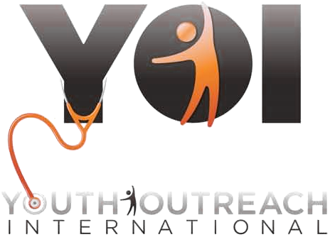

501(c)(3) · Non-denominational evangelical ministry
From one address in Lancaster to sixteen countries.
Youth Outreach International builds and equips sustainable medical clinics, brings clean water to communities that have none, and feeds children who are running out of time.

Working to end starvation and improve health in
Gulu, Uganda
Darfur, Sudan
Freetown, Sierra Leone
Guatemala
… and other regions
Hospitals and clinics we support
16 countries
- Benin
- Congo
- Ghana
- Guatemala
- Haiti
- Indonesia
- Kenya
- Moldova
- Romania
- Rwanda
- Sierra Leone
- Sudan
- Uganda
- United States
- Zambia
- MalawiNewest
What we do
Three things, done thoroughly.
Housing, clothing, food and health care are but a few of the issues Youth Outreach International addresses. Three of them get the bulk of everything we raise.
Medical clinics built to last
We build and equip clinics that keep running after we leave — supplying diagnostic equipment, pharmaceuticals and the best medical care we can put in local hands.
Clean water at the source
Wells and water purification systems, because a clinic in a village with contaminated water is treating the same illnesses forever.
Food for malnourished children
Feeding and nurturing severely malnourished children, including ready-to-use therapeutic food that works without refrigeration, clean water or a hospital bed.
Also underway
The rest of the work
- ChildrenFunding the needs of children living with HIV and AIDS
- PartnersWorking alongside evangelical pastors in several countries
- SupplyDistribution of food and medicines
- RegionsSupporting work in both Central America and East Africa
In focus
Plumpy'Nut
A severely malnourished child usually needs a hospital, clean water and weeks of care. Ready-to-use therapeutic food changes that arithmetic. It is a peanut paste, fortified with milk powder, sugar, oil, vitamins and minerals, sealed in a foil sachet.
It needs no refrigeration, no mixing, no clean water and no nurse. A mother can feed her child at home. That is why so much of what you give goes into these sachets.
Video
The original Plumpy'Nut film was published in Flash and no longer plays in any browser. Re-upload it to YouTube or Vimeo and it can be embedded here.
Who we are
What we're for, and how we go about it.
Our vision
Youth Outreach International is a non-denominational evangelical ministry that exists to facilitate worldwide evangelistic opportunities for both the underprivileged and the influential. By meeting medical, educational, social and spiritual needs, we yield improved health and changed lives through Christ.
Our mission
Youth Outreach International shares the love of Jesus in countries where we have relationships and influence, by supplying the best possible medical care, diagnostic equipment and pharmaceuticals. We will gather funds, coordinate transportation, and be instrumental in providing quality health education and disease prevention to all people we encounter.
Envision a world where all children are cared for, valued and loved. Your involvement can help make that vision a reality.
Read our brochure (PDF) →Give
You can make a difference today.
Every gift is tax-deductible. Give online in about a minute, or send a check if you'd rather. See what a gift covers →
Give online
Donate securely through PayPal using a card or your PayPal balance. No account needed.
Mail a check
Make checks or money orders payable to Youth Outreach International and send them to:
Youth Outreach International43 Breeze Way
Lancaster, PA 17602